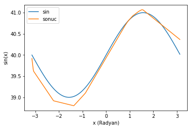
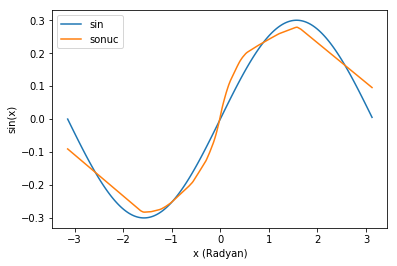
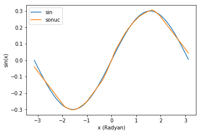

102 - Veri mühendisliği - y'de bias ve scale
Bu yazıdaki tüm kodları jupyter notebook formatında, Suni Dimağ github repository‘sinden çekebilirsiniz.
101 dersinde kurduğumuz ağ üzerinden, verimizdeki hedef değerlerin (y) bazı özelliklerinin ağımızın performansını nasıl etkilediğini inceleyeceğiz.
|
|
Training ve test kümelerinin oluşturulması
Önceki derste yazdığımız training ve test kümelerini üreten fonksiyonları biraz daha genelleştirdik. Bu kez parametre olarak bir fonksiyon alıyorlar ve y değerlerini, ürettikleri X değerlerini bu fonksiyondan geçirerek oluşturuyorlar.
Yeni yazdığımız sine_function fonksiyonu ise bize üç ayrı ayarlanabilir parametresi olan bir sinüs fonksiyonu döndürüyor. Training ve test kümesi üreten fonksiyonlara parametre olaran buradan aldığımız fonksiyonu geçeceğiz.
testModel fonksiyonu ise yine geçen derste kullandığımız grafik fonksiyonunun aynısı.
|
|
Modelin oluşturulması
Yine bir önceki derste kullandığımız modelin aynısını kullanacağız.
Modelimizi oluşturduktan sonra tüm bağlantı ağırlıklarını bir değişkende saklıyoruz ki her deneye aynı noktadan başlayabilelim.
|
|
Deney 0 - Referans
İlk olarak noiserate = 0, bias = 0 ve scale = 1 ile ağımızı 450 epoch eğittizde nasıl bir sonuç aldığımıza bakalım. Bu bizim referansımız olacak. Yapacağımız değişikliklerde performansı bu referanslar karşılastıracağız.
|
|
Bakalım bias neyi değiştiriyor.
Deney 1 - Pozitif Bias
Fonskiyonumuzun bias ayarı, fonksiyonun çıktısını olduğu gibi yukarı veya aşağı itelemeye yarıyor. Yukarıdaki örnekte sinüs fonksiyonunun -1 ile 1 arası değerler döndüğünü görüyorsunuz. Şimdi aynı fonksiyonu 39 ile 41 arası değerler dönecek halde tanımlayıp ağımızı yeniden eğitmeyi deneyelim.
|
|

Ağımızın performansı gözle görülür ölçüde düştü. Konuyu iyice abartırsak ne olur dersiniz?
|
|
Epoch 1/3 600/600 [==============================] - 0s - loss: nan Epoch 2/3 600/600 [==============================] - 0s - loss: nan Epoch 3/3 600/600 [==============================] - 0s - loss: nan
Loss taşma yapacak derece büyüdü ve modelin hesaplayamayacağı hale geldi.
Deney 2 - Küçük scale
Fonskiyonumuzun scale ayarı, fonksiyonun çıktısını y ekseninde daraltıp genişletmeye yarıyor. Yukarıdaki örnekte sinüs fonksiyonunun -1 ile 1 arası değerler döndüğünü görüyorsunuz. Şimdi aynı fonksiyonu -0.1 ile 0.1 arası değerler dönecek halde tanımlayıp ağımızı yeniden eğitmeyi deneyelim.
|
|

Ağımızın performansı yine düştü. Fakat bu seferki çıktı önceki derste ağımız fonksiyonu tam olarak öğrenemeden arada çizdiğimiz grafiklere benziyor. Eğitimi biraz daha sürdürelim.
|
|

Evet gerçekten de öğrenmeyi başardı, ama eğitim neredeyse 3 kat uzun sürdü ve hala performansımız referans kadar iyi değil.
Uuuu beybi.
Özet
- Ağımıza öğretmeye çalıştığımız hedef değerlerin bias ve scale‘i veya istatistik diliyle ortalama ve varyans’ı önemli. Seçilen aktivasyon fonksiyolanlarına göre kullanılabilecek aralıklar değişse bile, ortalamanın 0, varyansın ise 1 olduğu durum genellikle tercih edilir.
- Yüksek bias, veya ortalamanın yüksek olması nöronların hassasiyetlerini yitirmesi ve aşırı durumlarda ağırlık veya loss değerinin taşma yapmasına sebep olabilir.
- Küçük scale veya varyansın düşük olması durumunda nöronlar hem hassasiyetlerini kaybeder, hem de eğitim çok daha uzun sürer.
Ödevler
- Negatif bias durumunda ağın performansı nasıl etkileniyor?
- Scale‘in gereğinden büyük olması durumunda ağın performansı nasıl etkileniyor?
- Aynı deneyleri gürültü miktarını 0.2 olarak ayarlayıp tekrarlayın. Bu durumda ne değişiyor?